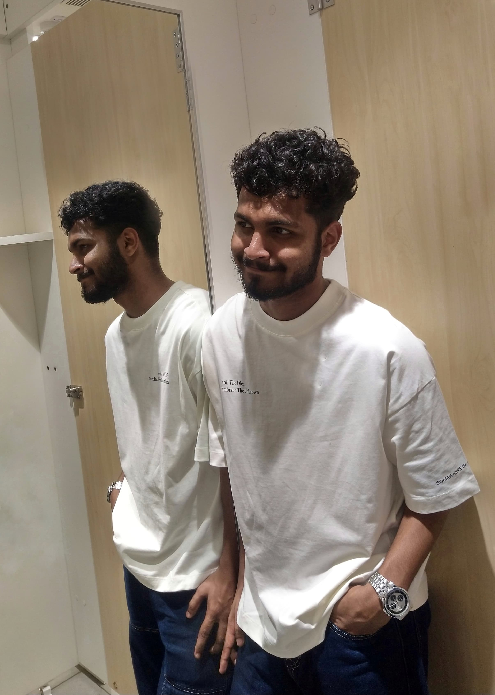

|

|
Jishnu C KFull Stack Developer |
||
|---|---|---|---|
Calicut,Kerala |
Phone: 9745771214 |
Email:jishnu3002@.com |
|
Skills & Summary |
Enthusiastic Python Developer with a strong foundation in Python programming, SQL databases (MySQL), and full-stack development. Holds a Bachelor's Degree in Information Technology from Kerala Technical University and currently honing skills through a full-stack development internship. Skilled in problem-solving, analytical thinking, and effective communication, with hands-on experience in web development fundamentals. Passionate about leveraging machine learning to drive innovative solutions, currently working on projects like Parkinson's Disease Detection and a Library Management System to enhance operational efficiency and user experience. |
||
Projects |
Parkinson's Disease Detection Using Machine LearningUniversity Project
|
||
Education |
Bachelor of Technology in Information Technology |
||
Certifications |
|
||
Languages |
|
||